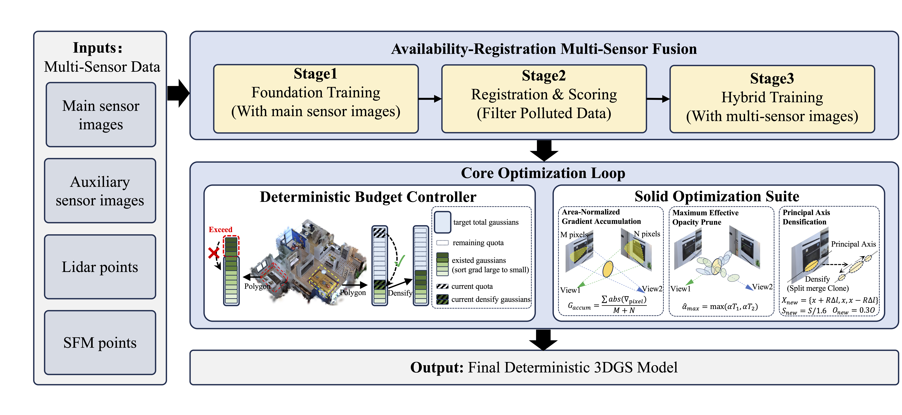
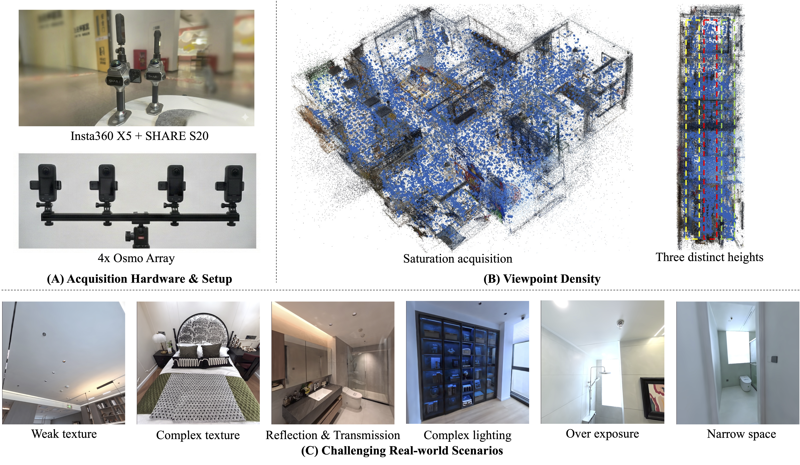

Qualitative Comparison

3D Gaussian Splatting (3DGS) has revolutionized neural rendering, yet existing methods remain predominantly research prototypes ill-suited for production-level deployment. We identify a critical "Industry-Academia Gap" hindering real-world application: unpredictable resource consumption from heuristic Gaussian growth, the "sparsity shield" of current benchmarks that rewards hallucination over physical fidelity, and severe multi-sensor data pollution. To bridge this gap, we propose YOGO (You Only Gaussian Once), a system-level framework that reformulates the stochastic growth process into a deterministic, budget-aware equilibrium. YOGO integrates a novel budget controller for hardware-constrained resource allocation and an availability-registration protocol for robust multi-sensor fusion. To push the boundaries of reconstruction fidelity, we introduce Immersion v1.0, the first ultra-dense indoor dataset specifically designed to break the "sparsity shield." By providing saturated viewpoint coverage, Immersion v1.0 forces algorithms to focus on extreme physical fidelity rather than viewpoint interpolation, and enables the community to focus on the upper limits of high-fidelity reconstruction. Extensive experiments demonstrate that YOGO achieves state-of-the-art visual quality while maintaining a strictly deterministic profile, establishing a new standard for production-grade 3DGS.

The pipeline begins with multi-sensor data undergoing Availability-Registration Multi-Sensor Fusion to filter polluted inputs. Under the deterministic budget controller, the number of Gaussian points at each stage is strictly controlled, which regulates growth based on preset constraints and Polygon regions. The process is enhanced by the Solid Optimization Suite for robust handling of complex textures.

The Immersion Dataset: (A) Heterogeneous multi-sensor capture rigs. (B) Ultra-dense capture that breaks the "sparsity shield." (C) Example frames showing challenging real-world attributes: weak texture, complex texture, high specularity & transmission, complex lighting, over exposure, and narrow space.
Bar heights are normalized within each track. Higher bars indicate better performance; LPIPS and Points Num are inverted because lower is better. Raw values are shown above bars.
@article{happyDog,
author = {Jia, Jinrang and Li, Zhenjia and Shi, Yifeng},
title = {You Only Gaussian Once: Controllable 3D Gaussian Splatting for Ultra-Densely Sampled Scenes},
journal = {arXiv preprint arXiv:2511.11233},
year = {2025},
}